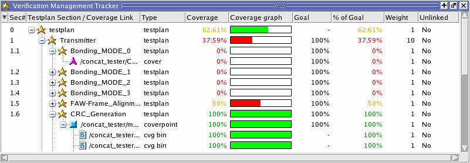

Test data, including
the coverage calculations, is perhaps best viewed in the Tracker
window.
The coverage analyze command — valid only in Coverage View mode (vsim
-viewcov) — is the command on which the Tracker window is based.
See this command in the Questa
SIM Reference Manual for further details on the specific functionality.
Prerequisites
To view test data in the Verification
Tracker window, you must have already:
Procedure
- Open the Verification Browser
window, if it is not open already:
Choose View
> Verification Management > Browser from the main menu.
- Double-click the merged file
(UCDB) that contains verification testplan and test results. If
you do not have a merged UCDB that contains a testplan, see the Questa SIM User’s Manual
for instructions on how to merge UCDBs.
This opens the UCDB in the
Tracker in Coverage View mode. Alternatively, you could do this
explicitly:
from the command line,
using:
vsim -viewcov <merged.ucdb>
in the
GUI: right click anywhere in the Verification Browser, and choose Invoke
CoverageView Mode.
- The Verification Tracker window
appears, similar to Figure 1. The coverage statistics displayed
in the Coverage column in the Tracker depend on whether the item
is a design unit or an instance. (Refer to “Calculation for Total Coverage” in the User’s Manual for more information.)
Linked covergroup, coverpoint, and cross coverage scopes are displayed, including
child items of those items, to the bin level.
Figure 1. Test Data in Verification
Tracker Window